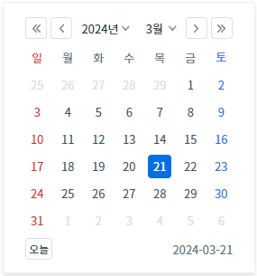
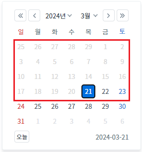
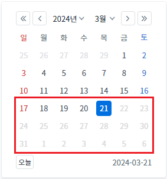

[InputCalendar] 캘린더의 날짜 비활성화 하기 - 지정한 날짜 이전/이후
1개요
InputCalendar의 'disableBeforeDate' 메소드와 'disableAfterDate' 메소드를 사용하여, 캘린더에 특정 날짜 이전 또는 이후의 날짜들을 비활성화하는 예제입니다. 비활성화 된 날짜는 사용자가 선택할 수 없습니다.
이 기능은 사용자가 입력하는 날짜, 기 입력(할당)된 날짜에 대해서는 제어하지 않습니다.
2구현된 기능
캘린더의 날짜 비활성화화기 - 지정일 이전
캘린더의 날짜 비활성화화기 - 지정일 이후
3예제 테스트 방법
3.1캘린더의 날짜 비활성화화기 - 지정일 이전
예제 영역 '캘린더의 날짜 비활성화화기 - 지정일 이전'에서 테스트합니다.1
STEP 1: 캘린더의 날짜를 확인합니다.
InputCalendar의 캘린더 아이콘을 클릭하여 캘린더의 날짜를 확인합니다.
오늘 날짜가 선택되어 있고, 캘린더의 모든 날짜가 활성화된 상태입니다.
Image 1.브라우저(Chrome) 실행 예시 - 캘린더 아이콘

Image 2.브라우저(Chrome) 실행 예시 - 캘린더

2
STEP 2: 버튼 '오늘 이전 날짜 비활성화'를 클릭합니다.
3
STEP 3: 실행 결과를 확인합니다.
InputCalendar의 캘린더 아이콘을 클릭하여 캘린더의 날짜를 확인합니다.
오늘 이전의 날짜가 비활성화된 것을 확인합니다. 비활성화된 날짜는 선택되지 않습니다.
Image 3.브라우저(Chrome) 실행 예시 - 캘린더

3.2캘린더의 날짜 비활성화화기 - 지정일 이후
예제 영역 '캘린더의 날짜 비활성화화기 - 지정일 이후'에서 테스트합니다.1
STEP 1: 캘린더의 날짜를 확인합니다.
InputCalendar의 캘린더 아이콘을 클릭하여 캘린더의 날짜를 확인합니다.
오늘 날짜가 선택되어 있고, 캘린더의 모든 날짜가 활성화된 상태입니다.
Image 4.브라우저(Chrome) 실행 예시 - 캘린더 아이콘

Image 5.브라우저(Chrome) 실행 예시 - 캘린더
2
STEP 2: 버튼 '오늘 이후 날짜 비활성화'를 클릭합니다.
3
STEP 3: 실행 결과를 확인합니다.
InputCalendar의 캘린더 아이콘을 클릭하여 캘린더의 날짜를 확인합니다.
오늘 이후의 날짜가 비활성화된 것을 확인합니다. 비활성화된 날짜는 선택되지 않습니다.
Image 6.브라우저(Chrome) 실행 예시 - 캘린더

4구현 예시
4.1캘린더의 날짜 비활성화화기 - 지정일 이전
스크립트를 작성합니다.
Example 1.Script
//예제 파일에서는 스크립트 scwin.btn_ex1_onclick에 작성되어 있습니다. //inputCalendar "ica_exam_1"에 지정일 이전 날짜 비활성화하기 ica_exam_1.disableBeforeDate("20240321"); //2024년 3월 21일 이전 날짜 비활성화
4.2캘린더의 날짜 비활성화화기 - 지정일 이후
스크립트를 작성합니다.
Example 2.Script
//예제 파일에서는 스크립트 scwin.btn_ex1_onclick에 작성되어 있습니다. //inputCalendar "ica_exam_2"에 지정일 이전 날짜 비활성화하기 ica_exam_2.disableAfterDate("20240321"); //2024년 3월 21일 이후 날짜 비활성화
4.3알아두기
캘린더에 비활성화된 날짜에 class를 재정의 할 수 있습니다. 비활성화된 날짜에 할당된 class명은 .w2calendar_date_disable 입니다.
Example 3.CSS
/* inputCalendar의 캘린더의 비활성화된 날짜 class 재정의 */ .w2inputCalendar_calendar .w2calendar_date_disable {color:#d7d7d7; }
5주요 API
disableAfterDate( dateStr )
disableBeforeDate( dateStr )
ioFormat
inputReadOnly